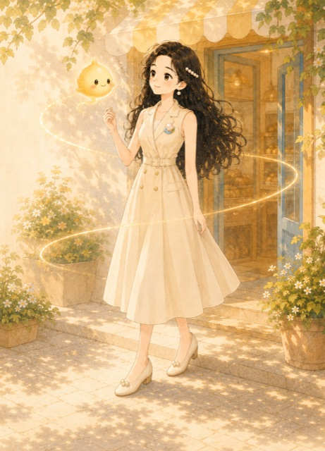

THE MAKER
把「也许」做成
可以验证的方案。
西西擅长观察、记录与问题拆解。她关心技术如何被真正使用，也相信清晰本身就是一种温度。
一个负责把复杂问题整理成路径的人，和一束让新方向被看见的光。

THE MAKER
西西擅长观察、记录与问题拆解。她关心技术如何被真正使用，也相信清晰本身就是一种温度。
THE LIGHT
好奇、灵感与尚未被证明的可能。它照亮线索，也陪西西向前。
篇目数量保持克制。每一篇都是一次被整理过的创作过程，而不是持续堆叠的资讯流。
从“像我”的形象尝试开始，到珍珠、小光与海森徽章慢慢成为长期稳定的视觉资产。
不是架空设定，而是一套进入复杂世界、保留感受并继续创造的方式。
海洋、森林、珍珠与光，分别对应变化、连接、沉淀与方向；它们共同构成西西与小光的视觉语言。